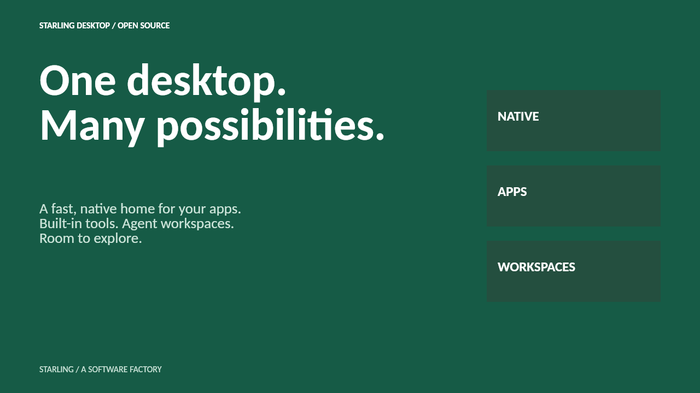

Skip to presentation
Starling
Desktop
GitHub ↗
Explore Desktop ↘

github.com/starling-build/starling
Starting live slides…
Retry live slides
A native desktop, everyday tools, agent workspaces, and more ways to work.
Browse the
presentation deck
, or
get Desktop
. JavaScript enables live slides.